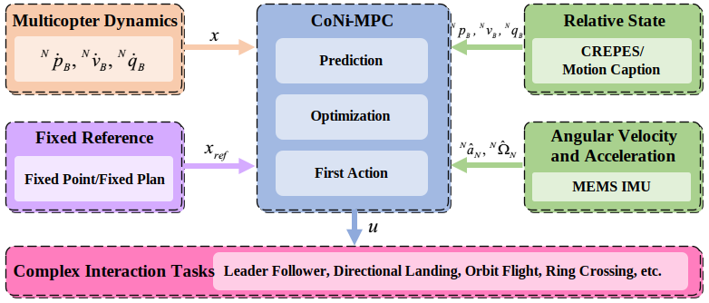

CoNi-MPC: Cooperative Non-inertial Frame Based Model Predictive Control RA-L 2023 (accepted)
- Baozhe Zhang *, 1, 3
- Xinwei Chen *, 1, 2
- Zhehan Li 1, 2
- Giovanni Beltrame 4
- Chao Xu 1, 2
- Fei Gao 1, 2
- Yanjun Cao 1, 2
- *Equal contribution
- 1 HIZJU
- 2 ZJU-CSE
- 3 CUHK-Shenzhen
- 4 PolyMTL
A quadrotor orbits a UGV by applying CoNi-MPC controller with a pre-computed circular trajectory in the UGV non-inertial frame. (a) is the accumulated shots of the quadrotor from the view of a camera on the UGV, which shows the relative circular trajectory of the quadrotor. (b) shows the experiment from a third-person view in the world frame, in which the flight trajectory appears chaotic along with the UGV S-shape trajectory.
Abstract
This paper presents a novel solution for UAV control in cooperative multi-robot systems, which can be used in various scenarios such as leader-following, landing on a moving base, or specific relative motion with a target. Unlike classical methods that tackle UAV control in the world frame, we directly control the UAV in the target coordinate frame, without making motion assumptions about the target. In detail, we formulate a non-linear model predictive controller of a UAV within a non-inertial frame (i.e., the target frame). The system requires the relative states (pose and velocity), the angular velocity and the accelerations of the target, which can be obtained by relative localization methods and ubiquitous MEMS IMU sensors, respectively. This framework eliminates dependencies that are vital in classical solutions, such as accurate state estimation for both the agent and target, prior knowledge of the target motion model, and continuous trajectory re-planning for some complex tasks. We have performed extensive simulations to investigate the control performance considering the varying motion characteristics of the target. Furthermore, we conducted considerable real robot experiments, employing laboratory motion-capture systems or relative localization methods implemented outdoors, to validate the applicability and feasibility of the proposed approach.
System framework
The relative state is defined as the relative position ${}^N\boldsymbol{p}_B$ ($N$ and $B$ refer to the target non-inertial frame frame and the agent body frame, respectively), the relative velocity ${}^N\boldsymbol{v}_B$, and the relative orientation (quaternion) ${}^N\boldsymbol{q}_B$. The system also incorporates the angular velocity ${}^N\boldsymbol{\Omega}_N$ and linear acceleration ${}^N\boldsymbol{a}_N$ of the target from a low-cost MEMS IMU. The relative estimation can be generated either from a motion capture system or directly from our previous work of CREPES, a relative estimation device. The proposed control method CoNi-MPC works as a high-level thrust and body rate controller and a low-level multi-stage PID controllers is used to track the thrust and body rate. The reference can be classified into two categories, fixed-point and fixed-plan schemes. The first can be used for leader-follower fashioned control, and the latter can be used for more complex tasks such as landing, orbit flight, and even more demanding ring crossing.
Experiments
Fixed Point: UAV tracks a fixed point behind UGV
Fixed Plan: UAV tracks a fixed landing trajectory
Ring Crossing
The diameter of the ring is 420 mm. The size of the quadrotor is 203.9 mm x 197.5 mm. The free space for the quadrotor to pass the ring is only about 100 mm at each side.
More fixed-point experiments
More fixed-plan experiments
Outdoor experiment
Note there is no GPS/SLAM/anchors technology used to realize this task.
Citation
Acknowledgements
We would like to thank Chice Xuan and Zhimiao Yu for helping us building up the test vehicles for indoor and outdoor experiments. We also would like to thank Qi Liu, Zhenjun Ying, and Zheng Wang for their technical supports of the relative estimation device, CREPES.
The code of this work is inspired by the work of rpg_mpc.
The website template was borrowed from Michaël Gharbi and Ref-NeRF.


E-mail: yanjunhi@zju.edu.cn
Address: 浙江省湖州市吴兴区西塞山路819号浙江大学湖州研究院B2幢